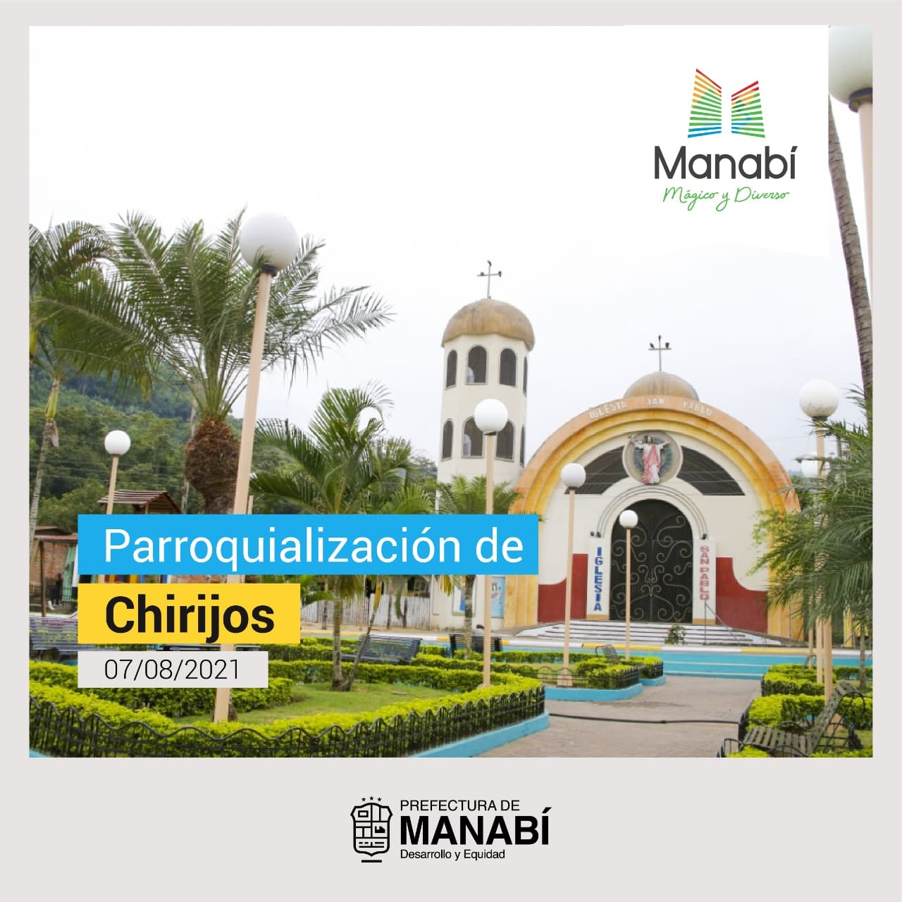
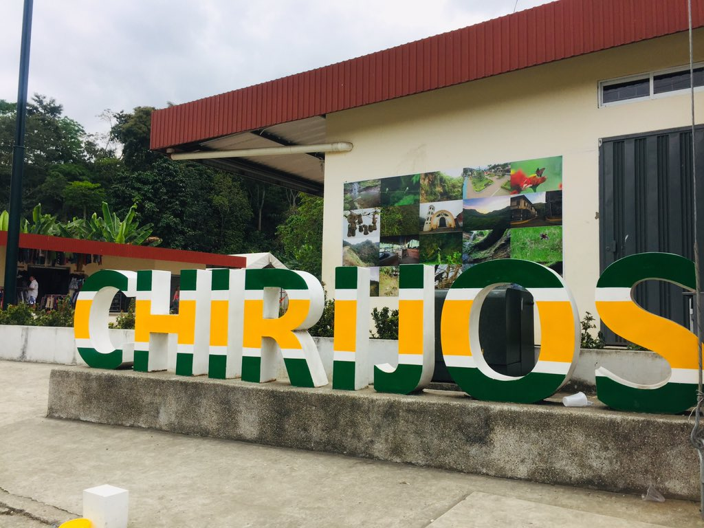
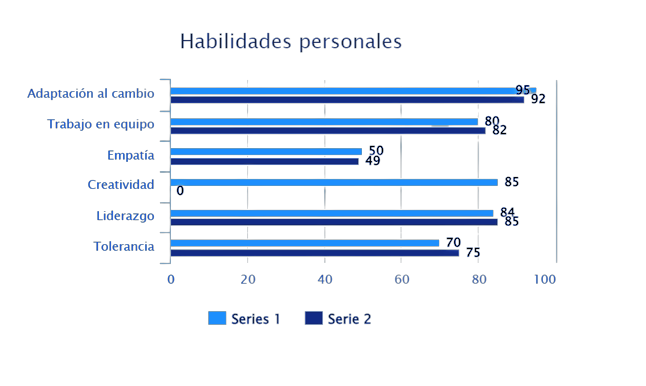

Neicer Ronaldo Velez Rodriguez
20/08/2002
- Whatsapp: +593979840954
-
Correo: vneicervelez@gmail.com - Facebook: Neicer Velez R
Descripcion Personal
Estudiante en busca de lograr su formación académica. Preparado para utilizar mis habilidades y pasión para lograr mis objetivos. Tecnológicamente hábil, ofrezco experiencia con muchas plataformas de medios sociales, programas de tecnología de oficina y habilidades informáticas avanzadas. Aporto una actitud positiva y la voluntad y motivación para aprender nuevos programas. Actualmente tengo 20 años, estoy cursando en 5to semestre en la carrera Tecnologías de la información de la Universidad técnica de Manabí y vivo en la parroquia rural de Chirijos cantón Portoviejo provincia de Manabí.
Historia de mi parroquia Chirijos
Anteriormente Chirijos pertenecía a la Parroquia Alajuela el cual se inició por los años 1855 en los que se destacan los primeros pobladores como es el señor Gregorio Vélez Macías hijo de un descendiente de la república de Colombia.Anteriormente Chirijos pertenecía a la Parroquia Alajuela el cual se inició por los años 1855 en los que se destacan los primeros pobladores como es el señor Gregorio Vélez Macías hijo de un descendiente de la república de Colombia.
Procedencia de su nombre
La Parroquia Rural Chirijos se debe al nombre a la cultura precolombina Milagro, con nombres semejantes como: Chicompe, Chamotete, Chaizamchispases, Pachinche, Visquije de la confederación Milagro. Aunque la cultura precolombina de milagro tuvo su mayor influencia. Este recinto se dedica por completo a la agricultura constituyendo un renglón de la productividad, incentivando el desarrollo económico del cantón Portoviejo, la provincia de Manabí y del Ecuador.
Habilidades
En mi opinion las habilidades de una persona se desarrollan segun las necesidades del las personas, no obstante estas son las que poseo actualmente.
Frase motivacional
Si juzgas a un pez por su habilidad para trepar árboles, pensará toda la vida que es un inútil. (Albert Einstein).
Mi Universidad
La Universidad Técnica de Manabí, UTM, es una institución pública de educación superior ubicada en la ciudad de Portoviejo, Manabí (Ecuador). Fue fundada el 29 de octubre de 1952 en el gobierno presidencial del Dr. José María Velasco Ibarra.